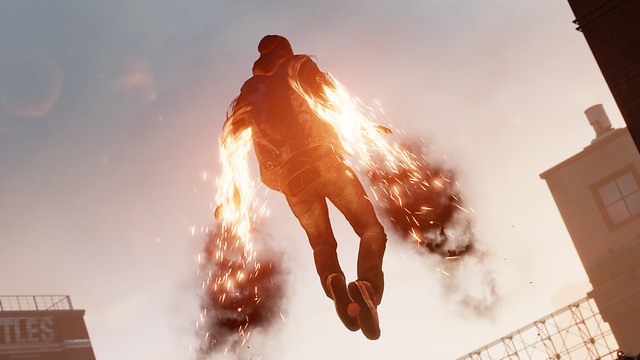
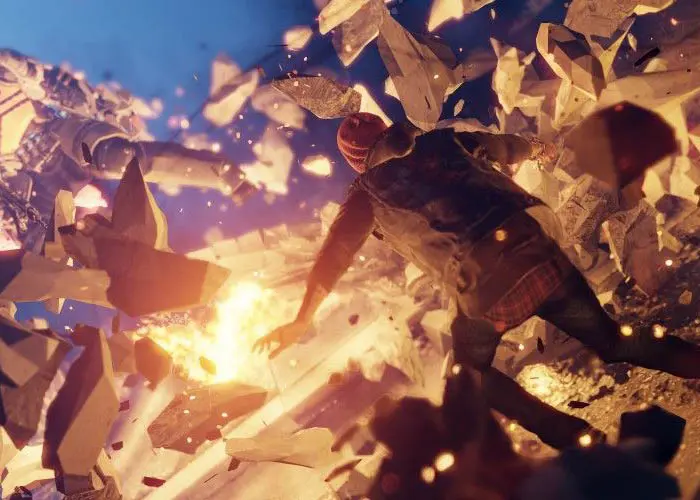

Poderes
Humo
Este poder solo aparece en InFAMOUS: Second Son adquirido por Delsin Rowe por absorción de Henry Daughtry (Hank) con este poder puedes hacer mas habilidades que en el de las anteriores entregas.
Color del Karma Bueno: Naranja con negro
Color del Karma Malo: Rojo con negro
Neón
Este poder aparece en InFAMOUS: Second Son y en InFAMOUS First Light adquirido por absorción por Abigail Walker (Fetch).
Este poder es diferente a los otros ya que es más luminoso, fosforescente y rápido.
Color con Karma Bueno: Morado azulado
Color con Karma Malo: Morado rojizo
Vídeo
Aparece en InFAMOUS: Second Son o en algun futuro DLC de Eugene. Es adquirido por absorción de el conductor Eugene Sims. El poder de vídeo es muy diferente a los otros ya que es un poder de realidad virtual. Si eres bueno podras invocar ANGELES y si eres malvado en cambio invocaras DEMONIOS
Color con Karma Bueno: Cian
Color con Karma Malo: Rojo
Hormigón o Concreto
El hormigón es un poder que aparece en InFAMOUS: Second Son adquirido por absorción de la antagonista principal, Brook Augustine
Se consigue al final del juego, a mitad de la lucha contra Augustine, es posiblemente el poder mas fuerte pero recargable de diferente forma, siendo recargable absorbiéndolo de los cuerpos de los enemigos.
Único color (No varía según el Karma): Café y amarillo.
